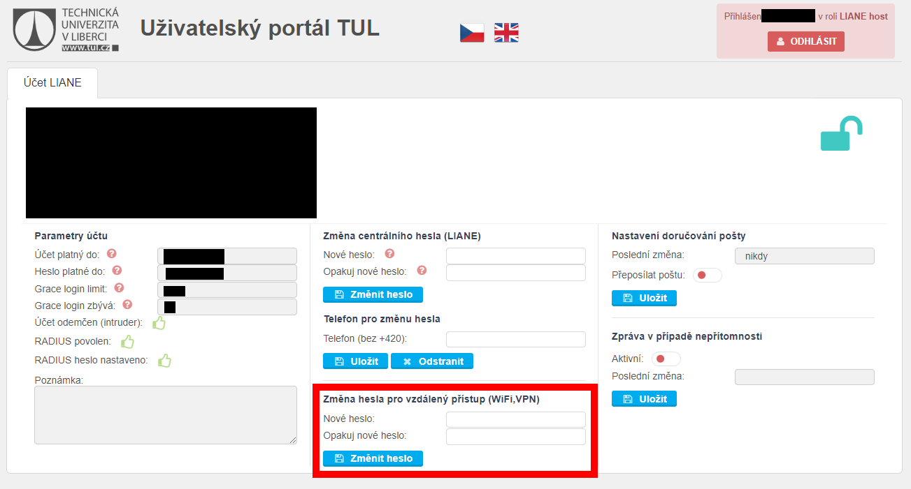

Jak se připojím k Wi-FI?
Pro připojení k Wi-Fi nabízí TUL dvě sítě, Eduroam a TULwifi. Obě sítě vyžadují heslo pro vzdálený přístup. Heslo pro vzdálený přístup si vytvoříte na této stránce v části Změna hesla pro vzdálený přístup (WiFi,VPN).
Nyní se můžete připojit k síti TULwifi použitím přihlašovacího jména ve tvaru jmeno.prijmeni@tul.cz a hesla pro vzdálený přístup. Síť TULwifi je méně bezpečná a proto doporučujeme používat bezpečnější síť Eduroam. Pro připojení k síti Eduroam je potřeba stáhnout Configuration Assistant Tool (CAT) ze stránky eduroamu.
Stránka automaticky detekuje jaký operační systém používáte a nabídne vám pro něj správný instalační soubor. Klikněte na tlačítko eduroam pro zahájení stahování.
Po stažení soubor otevřete. Otevře se okno s informací, že se jedná o soubor pro TUL. Pokračujte stisknutím tlačítka Další.
Otevře se okno s informací, že program bude fungovat pouze pokud jste členem skupiny eduroam na TUL. Pokračujte stisknutím tlačítka OK.
Nyní se otevře okno s místy pro zadání vašich přihlašovacích údajů, přihlašovacího jména ve formátu jmeno.prijmeni@tul.cz a hesla pro vzdálený přístup.
Zadejte údaje a stiskněte tlačítko Instalovat. Po dokončení instalace se můžete připojit k síti Eduroam.
V případě problémů s připojením k Wi-Fi, se kterými si neporadíte pomocí dostupných návodů, se emailem obraťte na správu Liane na adrese liane@tul.cz. Do emailu uveďte vámi používaný operační systém včetně jeho verze, typ vaší bezdrátové karty a popis problému.